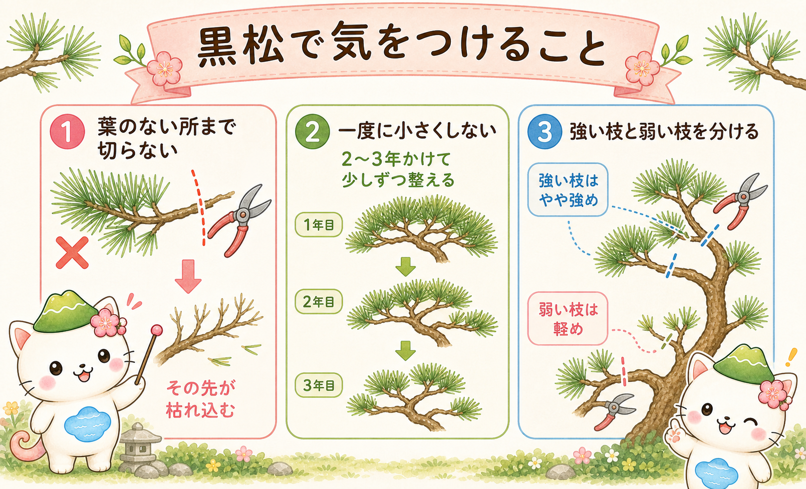
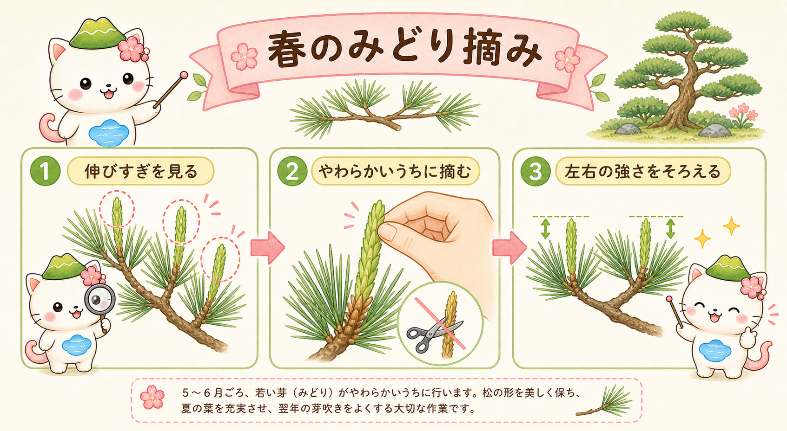
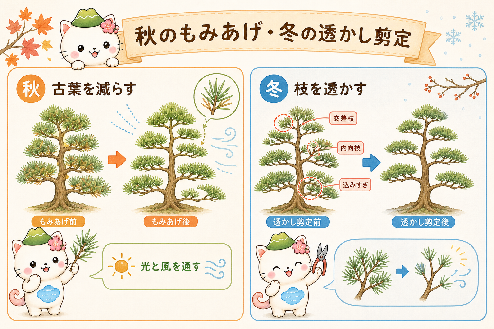

黒松の剪定って、何をするの？
黒松の手入れは、大きく分けると2本柱です。ひとつは春〜初夏の「みどり摘み」で新しい芽の伸びをそろえること。もうひとつは秋〜冬の「もみあげ・透かし剪定」で古い葉を減らし、枝の流れを整えること。この2つを毎年くり返して、樹形を保ちます。
そしてもうひとつ大事なのが、カレンダーの日付より「樹の状態」で見ること。地域や年で適期は前後します。芽がふくらんだか、みどりがやわらかいか、古葉が目立ってきたか——そんなサインを見て動くほうが失敗しません。

ここで紹介するのは、庭や庭仕立ての黒松向け。盆栽でやる強い「芽切り」とは別ものだから、まずは家庭で再現しやすい手入れからいこうね。
まずは1年の流れをつかむ
細かい手順の前に、1年でやることをざっくり地図にしておきましょう。下の図で、季節ごとの「主役の作業」をつかんでください。

- 春：芽かき・芽数調整（混み合う芽を減らす）
- 初夏：みどり摘み（新芽の伸びをそろえる）
- 真夏：基本は養生と観察（強い剪定は避ける）
- 秋〜冬：もみあげ・透かし剪定（古葉を減らし枝を整える）
黒松で気をつけること3つ
黒松は剪定に比較的耐えますが、「どこでも切ってよい木」ではありません。手を動かす前に、次の3つだけ頭に入れておくと、大きな失敗を防げます。

① 葉のない所まで切らない
黒松は、広葉樹のように好きな場所から芽を吹き戻してはくれません。葉のない位置で切ると、その先が枯れ込むことがあります。枝を残すときは、必ずどこかに葉や若い枝を残しましょう。
② 一度に小さくしない
樹形が乱れていても、大枝を一気に落として急に小さくすると、見た目も樹勢も乱れがちです。2〜3年かけて少しずつ整えるほうが、結果的にきれいに収まります。
③ 強い枝と弱い枝を分けて扱う
木の上や外側は強く、内側や下枝は弱くなりがち。全部を同じように減らすと、強弱の差がさらに広がります。強い枝はやや強め、弱い枝は軽めが基本です。
「強く切るほど暴れる」のは黒松も同じ。なぜそうなるかは、植物ホルモンと剪定の記事でくわしく説明しているよ。あわせて読むと納得感が増すはず。
春〜初夏：芽かきとみどり摘み
春の管理は、芽の数を整理して、初夏のみどり摘みで伸び方をそろえる流れで考えるとわかりやすいです。関東以西の平地では、おおむね4〜6月が中心になります。

芽かき・芽数調整
春に芽が複数まとまって立ち上がったら、まず混み具合を見ます。内向きの芽、重なって将来込みそうな芽から減らし、ふつうは2本前後を残すイメージで整理します。同じ場所に3本以上残すと、将来こんもりと重くなりがちです。
みどり摘み
みどりが伸びて、まだやわらかいうちに長さを調整します。強い枝はやや強めに摘んで伸びを抑え、弱い枝は軽めにして葉を確保。「全部を同じ長さ」より「樹全体の勢いをそろえる」ことを優先すると失敗しにくくなります。
真夏：切るより「弱らせない」
真夏は高温と乾燥で木が消耗しやすい時期。家庭の庭木では、強い作業は標準にしないほうが安全です。
基本は軽い手入れと観察
枯れ枝や明らかな徒長枝の整理にとどめ、樹冠を急に透かしすぎないこと。古葉を一気に減らすと、今まで陰だった幹や内枝が急に日に当たって傷みやすくなります。本格的な整枝は秋〜冬に回しましょう。
水と病害虫を見る
黒松は乾燥に比較的強いですが、植え付け直後や根が傷んだ木は別です。高温乾燥ではハダニも出やすいので、葉色・葉のつや・枝先の勢いを見て、必要なら水やりや風通しを整えます。
秋〜冬：もみあげと透かし剪定
秋から冬は、古い葉を減らして光と風を通し、いらない枝を整理して、翌春の芽吹きにつなげる時期です。関東以西では、おおむね10月後半〜2月ごろが中心になります。

もみあげ
古い葉や込みすぎた葉を手で外し、枝の内側まで光が入るようにします。弱い枝は葉を残し気味に、強い枝や頂部はやや多めに減らして勢いを抑えるのが基本。上から下へ順に進めると、全体の強弱を見ながら作業できます。茶色い古葉を放置すると、風通しが悪くなり害虫の温床にもなります。
透かし剪定
立ち枝・逆さ枝・絡み枝・内向き枝・重なり枝を整理して、枝の層（枝棚）が見えるようにします。庭木の黒松では、面で刈り込むより、不要な枝を元から抜いて流れを見せるほうが自然です。ここでも、葉のない所へ深く切らないのが鉄則です。
上下で重なっている枝は、どちらを生かすか先に決めて、一方をスッと抜くと流れがきれいに見えるよ。迷ったら、外向きに伸びる枝を残すのがおすすめ。
失敗しやすいポイント
黒松は「切れば切るほど整う」木ではありません。最後に、つまずきやすい点をまとめておきます。
- 葉のない所まで切り戻す … その先が枯れ込みやすい。必ず葉や若枝を残す。
- 芽を減らしすぎる … 枝先がさびしくなり、あとから枝を作り直しにくい。
- 弱い枝も同じ強さで作業する … その枝だけ衰える。弱い枝は軽めに。
- 真夏に大きく透かす … 幹や内枝が日焼け・乾燥しやすい。夏は控えめに。
まとめ
黒松の剪定は、春のみどり摘みと秋冬のもみあげ・透かし剪定が二本柱。そこに「葉を残して切る」「一度に小さくしない」「強い枝と弱い枝を分ける」という3つの注意を重ねれば、大きな失敗はぐっと減ります。
そして、日付より樹の状態を見ること。今年で完成させようとせず、毎年少しずつ。黒松は手をかけた分だけ、ゆっくりと美しい姿に応えてくれる木です。
おつかれさま！ 「なぜその切り方がいいの？」を仕組みから知りたくなったら、植物ホルモンと剪定の記事へ。剪定の見え方がもっと変わるよ。